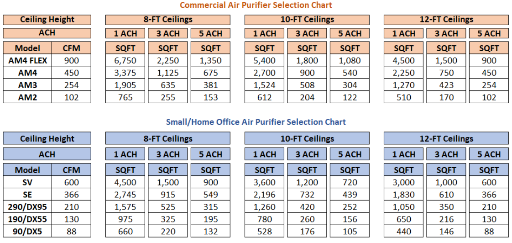
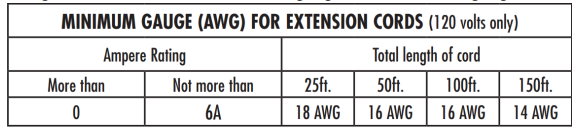

- Product Features and Specifications
- Energy Usage & Power
- Air Changes per Hour (ACH)
- Filter Maintenance
- Installation, Mounting, & Optimal Air Flow
- Why Purify with AeraMax
- Airborne Contaminants
- What Professional Services Do You Offer?
- General Troubleshooting and Maintenance
- Warranty Information
- Fellowes Protects
| AeraMax Pro Units | Noise levels at each fan speed |
|---|---|
| AM2, AM2S | 39, 43, 51, 61, 67 |
| AM3, AM3S, AM3R, AM3 PC, AM3S PC, AM3R PC | 42, 47, 52, 59, 67 |
| AM4, AM4S, AM4R, AM4 PC, AM4S PC, AM4R PC | 42, 47, 52, 59, 70 |
| AM4 FLEX | 49, 49, 50, 54, 63 |
As a reference, many hand dryers sound pressure levels exceed 100 (dB), with averages around 80+ (dB). AeraMax Pro can be set to "quiet mode" and will run at or below the ambient sound level of the room in which it is installed.
| Small/Home Office | Noise levels at each fan speed |
|---|---|
| AM90, AM100, DX5, DB5 | 42, 50, 60 |
| AM190, AM200, DX55, DB55 | 30, 50, 60, 70 |
| AM290, AM300, DX95 | 33, 50, 60, 70 |
| SE | 38, 38, 45, 55, 68 |
| SV | 40, 50, 61, 68 |
PlasmaTrue™ Technology is optional setting that utilizes ionization to help safely remove airborne pollutants.
For both AeraMax Pro and Small/Home Office units:
PlasmaTrue technology creates an electrical discharge that produces ions in the air... and those ions provoke particles in the air to be charged. These charged ions cause other oppositely charged ions to cluster together and become larger. When they become large enough, they fall to the floor or get caught in the filter. AeraMax products use ionization to help with its filtration process's overall efficiency, purifying the air even before it gets to the filter. By doing so, PlasmaTrue technology works to extend filter life.
No. The Environmental Protection Agency has National Ambient Air Quality Standards for pollutants considered harmful to public health and the environment. These standards provide public health protection, including protecting the health of “sensitive” populations such as asthmatics, children, and the elderly. All AeraMax™ products generate ozone far below the standard set by the EPA. In addition, all AeraMax™ units are UL certified, testing well below the UL specification for ozone
Air purifiers, like many other products (computers, monitors, copiers, ceiling fans, and more) have a normal "ozone byproduct." An acceptable level for ozone byproduct has been set in the Code of Federal Regulations (CFR) at a maximum 50 parts per billion (ppb). All air purifying devices must pass Underwriter Laboratories (UL) 867*.
In July 2013, Underwriter Laboratories conducted UL 867 testing procedures to determine the level of ozone byproduct generation by the PlasmaTrue™ bipolar ionizer used in AeraMax Pro purifiers. The highest level of ozone generation observed during testing was 4.0 ppb (acceptable level for ozone is up to 50.0 ppb). For reference, the Environmental Protection Agency developed the Air Quality Index for Ozone to give 3 guidance to state and local air quality forecasters to assist in issuing Air Quality Index forecasts. The levels are:
- 0 – 50 ppb: Good
- 51 – 100 ppb: Moderate
- 101 – 150 ppb: Unhealthy for Sensitive Groups
- 151 – 200 ppb: Unhealthy
- 201 – 300 ppb: Very unhealthy
Cities like Houston, TX and Los Angeles, CA can have indexes of 80 to 100 ppb at different times of the year.
Note that AeraMax Small/Home Office units ship with PlasmaTrue ON; AeraMax Pro units ship with PlasmaTrue OFF. The PlasmaTrue™ feature can be turned off by pressing and holding the icon until the light turns off.
* This standard for acceptable levels of ozone byproduct is found in section 21:801.415 of the Code of Federal
For both AeraMax Pro and Small/Home Office units:
The PlasmaTrue™ Icon on your indicator screen indicates that the PlasmaTrue™ Technology is active. There is no way for the human eye to see the effect of PlasmaTrue™. Most machines will also produce a bit of a high-pitched noise that comes from the machine when the PlasmaTrue technology is on (not 100% of the time). All AeraMax Pro units come with PlasmaTrue turned OFF and all Small/Home Office units come with PlasmaTrue turned ON.
Yes, the PlasmaTrue™ Technology feature on all AeraMax™ Pro and Small/Home Office Air Purifier units can be turned off by pressing and holding down on the PlasmaTrue™ icon on the touch screen display panel for approximately 5 seconds. The PlasmaTrue™ Technology indicator light will turn off, letting you know that the PlasmaTrue™ Technology feature on the machine is turned off. Please note that if you turn off the PlasmaTrue™ Technology feature, it may reduce the coverage area below the AHAM Verifide rating.
For both AeraMax Pro and Small/Home Office units:
There is no difference between an ionizer and PlasmaTrue™ Technology. Ionizers use electrostatically charged plates to produce positively or negatively charged gas ions that particulate matter sticks to in an effect like static electricity. Some ionizers produce Ozone that can be harmful to your health; however, PlasmaTrue™ Technology has been tested and validated per the latest regulation to show that it does not generate harmful Ozone.
Ozone generators are optimized to attract an extra oxygen ion to an O2 molecule, using either a corona discharge tube or UV light. PlasmaTrue™ Technology is an ionizer, not an ozone generator
AM3&4 PRO (non-PC) - Gen 1: The below video outlines how to override the EnviroSmart™ Technology:
AM2, AM3&4 PRO PC, AM4 FLEX, and all Small/Home Office Units - Gen 2: Has manual mode; press and hold manual icon for a few seconds until the light is illuminated to go into manual mode.
AeraMax™ 90/100/DX5
- Your indoor air is probably clean with no pollutants in it. To verify, place a dry erase marker or hand sanitizer – or any other object emitting a strong smell such as a perfumed item close to the right side of the handle on the back of your air purifier.
- The AeraSmart™ Sensor, located to the right of the handle, will detect the odor after a few seconds and trigger the amber or red level of your AeraSmart™ Sensor Indicator Light.
- If this experiment does not work, verify that the bag has been removed from around your filters and conduct the above experiment again.
- If this still does not work, please call customer service 1-800-477-7940
AeraMax™ SE
- Your indoor air is probably clean with no pollutants in it. To verify, place a dry erase marker or hand sanitizer – or any other object emitting a strong smell such as a perfumed item close to the right side of the handle on the back of your air purifier.
- The AeraSmart™ Sensor, located on the back of the unit just above the filter panel, will detect the odor after a few seconds and trigger the amber or red level of your AeraSmart™ Sensor Indicator Light.
- If this experiment does not work, verify that the bag has been removed from around your filters and conduct the above experiment again.
- If this still does not work, please call customer service 1-800-477-7940
AeraMax™ 190/200/DX55/290/300/DX95 and all AeraMax™ PRO AM2/AM3/AM4/FLEX units
- Your indoor air is probably clean with no pollutants in it. To verify, place a dry erase marker – or another object emitting a strong smell such as a perfumed item close to the right side of the machine, by the Fan Speed Indicator.
- The AeraSmart™ Sensor, located on the right side of the air purifier, will detect the odor after a few seconds and trigger the amber or red level of your AeraSmart™ Sensor Indicator Light.
- If this experiment does not work, verify that the bag has been removed from around your filters and conduct the above experiment again.
- If this still does not work, please call customer service 1-800-477-7940.
For both AeraMax Pro and Small/Home Office units:
- Verify that the bag has been removed from around the filters.
- Verify that your filters are not excessively dirty.
For AeraMax Pro:
Press and hold the “Auto” icon. The unit will beep, and the Auto Icon will illuminate.
For Small/Home Office units:
Press the “Auto” icon. The unit will beep, and the Auto Icon will illuminate
Small/Home Office units: You will need to override Auto Mode. To use manual mode; press manual icon until the light is illuminated to go into manual mode.
If you want to adjust the fan speed manually (as opposed to letting it adjust automatically based on the quality of the air), you can press the Fan Icon to increase or decrease the speed of the fan. When in Turbo setting, pressing the Fan Icon will return the air purifier to the lowest fan speed setting AM3&4 PRO (non-PC) - Gen 1: You will need to override Auto Mode. To use manual mode; press and hold 5 manual icon for a few seconds until the light is illuminated to go into manual mode.
If you want to adjust the fan speed manually (as opposed to letting it adjust automatically based on the quality of the air), you can press the Fan Icon to increase or decrease the speed of the fan. When in Turbo setting, pressing the Fan Icon will return the air purifier to the lowest fan speed setting.
The below video outlines how to override the EnviroSmart™ Technology:
AM2, AM3&4 PRO PC, AM4 FLEX, and all Small/Home Office Units - Gen 2: Has manual mode; press and hold manual icon for a few seconds until the light is illuminated to go into manual mode.
If you want to adjust the fan speed manually (as opposed to letting it adjust automatically based on the quality of the air), you can press the Fan Icon to increase or decrease the speed of the fan. When in Turbo setting, pressing the Fan Icon will return the air purifier to the lowest fan speed setting.
Aera+™ Mode is designed to increase the average air changes per hour of the machine. Our engineers have designed a specific algorithm that increases the air turnover rate by limiting the machine to its higher speeds, hence preventing the machine from running at its lower speeds. On the AeraMax™ 90/100/DX5, there is an average increase of about 35%. On the AeraMax 190/200/DX55/290/300/DX95, there’s an average increase of about 50%.
Press the + icon on the indicator screen. The unit will beep, and the icon will illuminate.
Press the + icon on the indicator screen. The unit will beep, and the icon will turn off. The air purifier will automatically return to original Auto mode.
For both AeraMax Pro and Small/Home Office units:
For approximately the first 4 minutes after turning the unit on, the Auto icon will flash while the unit
measures air quality.
For both AeraMax Pro and Small/Home Office units:
Wait for a few more minutes. If the lights do not stop blinking, call customer service 1-800-477-7940 for
further assistance about the electronics or AeraSmart™ Sensor of your product.
AeraMax™ 90/100/DX5:
- Verify that the On (I) /Off (O) switch, located on the back of the machine, is switched to On (I).
- Verify it is plugged in. Verify that the power outlet works by trying a different appliance.
- Verify that the filter panel on the back of the machine is properly in place.
- If it still does not work, call customer service at 1-800-477-7940.
AeraMax™ 190/200/DX55/290/300/DX95:
- Verify that the On (I) /Off (O) switch, located on the back of the machine, is switched to On (I).
- Verify it is plugged in. Verify that the power outlet works by trying a different appliance.
- Verify that the filter drawer on the right side of the machine is properly in place.
- If it still does not work, call customer service at 1-800-477-7940.
AeraMax™ SE:
- Verify that the On/Off button, located on top of the machine, is switched to On
- Verify it is plugged in. Verify that the power outlet works by trying a different appliance.
- Verify that the filter panel on the back of the machine is properly in place.
- If it still does not work, call customer service at 1-800-477-7940.
AeraMax™ SV:
- Verify that the On/Off button, located on top of the machine, is switched to On.
- Verify it is plugged in. Verify that the power outlet works by trying a different appliance.
- Verify that the filter panels on both sides of the machine are properly in place.
- If it still does not work, call customer service at 1-800-477-7940.
AeraMax™ PRO AM2/AM3/AM4:
- Verify that the On (I) /Off (O) switch, located on the back of the machine, is switched to On (I).
- Verify it is plugged in. Verify that the power outlet works by trying a different appliance.
- Verify that the filter panel on the front of the machine is properly in place.
- If it still does not work, call customer service 1-800-477-7940.
AeraMax™ PRO AM4 FLEX:
- Verify it is plugged in. Verify that the power outlet works by trying a different appliance.
- Verify that the filter panel on the front of the machine is properly in place.
- If it still does not work, call customer service 1-800-477-7940.
| Units | Elec | Voltage (V) | Frequency (Hz) | Power Consumption (W) | Current (A) |
|---|---|---|---|---|---|
| 90/100/DX5 | PLUG | 120 | 60 | 37, 40, 51 | 0.42 |
| 190/200/DX55 | PLUG | 120 | 60 | 6, 9, 16, 62 | 0.52 |
| 290/300/DX95 | PLUG | 120 | 60 | 6, 11, 20, 86 | 0.72 |
| SE | PLUG | 120 | 60 | 9, 25, 70 | 0.59 |
| SV | PLUG | 120 | 60 | 5, 9, 21, 85 | 0.71 |
| AM2 | PLUG | 120 | 60 | 5, 7, 11, 33, 55 | 2 |
| AM3/AM3 PC | WIRE | 120 | 60 | 5, 8, 11, 21, 100 | 0.91 |
| AM3S/AM3S PC/ AM3R/AM3R PC | PLUG | 120 | 60 | 5, 8, 11, 21, 100 | 0.91 |
| AM4/AM4 PC | WIRE | 120 | 60 | 8, 12, 18, 35, 166 | 1.5 |
| AM4S/AM4S PC/ AM4R/AM4R PC | PLUG | 120 | 60 | 8, 12, 18, 35, 166 | 1.5 |
| AM4 FLEX | PLUG | 120 | 60 | 22, 31, 48, 89, 307 | 3 |
Assuming the unit will run for 10 hours per day, 365 days a year (actual run-time will vary), on an average of the 3rd speed, the estimated annual power consumption for each unit is as follows:
- AM3 average estimated annual power consumption is 120.82 kWh. Using a $0.10 cost per kWh, the estimated annual cost for power, per unit, is $12.08.
- AM4 average estimated annual power consumption is 138.9 kWh. Using a $0.10 cost per kWh, the estimated annual cost for power, per unit, is $13.89.
- Actual cost of power consumption will vary based on usage and actual cost per kWh.
Calculation: Watts / 1000 (to convert to kWh) x 10 (10 hours per day) x 365 (365 days) x 0.16 (USA national average cost per kWh) = Estimated annual cost for power per unit per year
*Actual cost of power consumption will vary based on usage and actual cost per kWh.
Also, the units are “intelligent” in that they use sensors to self-regulate their settings based on the room’s occupancy and condition. This helps optimize air cleaning performance and energy efficiency.
ACH stands for “Air Changes per Hour” and is one of the least understood ratings on air purifiers. The ACH rating indicates how many times per hour an air purifying device can exchange the air within a room. For example, an ACH rating of 5x means that the full air volume is exchanged five times every hour.
All air purifiers display a Cubic Feet per Minute (CFM) number under the specifications. If you multiply the CFM by 60 (minutes per hour) and divide by 8 feet (average ceiling height). Then divide that total by the ACH rating, you’ll end up with the maximum square footage number for the air purifier.
Air changes per hour, or air change rate, abbreviated ACH or ACPH, is a measure of the air volume added to or removed from a space (normally a room or house) divided by the volume of the space. If the air in the space is either uniform or perfectly mixed, air changes per hour is a measure of how many times the air within a defined space is replaced.
To estimate the coverage needed, divide the hourly air delivery rate of the unit by the total cubic feet of the room. The CDC recommends 5 air changes per hour. For example, the AM3 has an hourly air delivery rate of 13,200 cubic feet (220 cfm x 60), the AM4 is 26,400 (440 cfm x 60).
Generally, HVAC does not run continuously in all spaces. HVAC systems stop when the room reaches thermostat temperature, since they’re designed to be efficient at heating/cooling. Only 10-20% of fresh air makes it into the building, while 80-90% is recirculated air. Additionally, a standard MERV-13 filter found in HVAC systems provide insufficient capture rates: 50% effective at .3 microns (according to ASHRAE) vs Fellowes’ H13 True HEPA filters which capture at least 99.95% of particles as small as 0.1 microns. CDC, ASHRAE, and the White House all recommend adding a portable HEPA air purifier where HVAC is unable to meet air quality needs.
Calculator Tool: https://docs.google.com/spreadsheets/d/1CQQBeufLzLjHng2oI5-B4bCotqAziAgol4MkgEiZik/edit?usp=sharing
See room size recommendation chart

How to use the chart above:
- Are you looking for a commercial machine or a small/home office machine?
- How tall are your ceilings (8 ft, 10 ft, 12 ft)? (Find your ceiling height in the top row of the chart)
- How many air changes per hour are you looking to get from an air purifier? (Choose from 1, 3, or 5 ACH from the second row just under your ceiling height)
- What’s the square footage of your space?
- Under your ceiling height, desired ACH, and within the machine types (commercial or small/home office), find an area coverage that is at least as large as your space. That row represents the machine that fits your space.
- Find your Air Purifier here: https://www.fellowes.com/us/en/air-purifiers/products/default.aspx
Yes, your air purifier can clean a bigger room, it will just take more time for it to clean a bigger room than a room for which it is rated. Keep in mind that multiple units may be used in a single space to increase ACH.
A True HEPA (High-Efficiency Particulate Absorption) air filter is a filter that removes at least 99.97% of airborne particles as small as 0.3 microns. The Fellowes® AeraMax™ True HEPA Filters are also treated with AeraSafe™ Antimicrobial Treatment that prevents microbes from growing on the filters.
AeraSafe™ antimicrobial treatment inhibits the growth of odor and stain-causing microorganisms.
H13 True HEPA filters which capture at least 99.95% of particles as small as 0.1 microns. (EN1822)
A pre-filter captures large particles and contaminants and helps protect the lifespan of other filters.
A carbon filter allows air to pass over activated carbon in order to remove odors and VOC’s from the air.
A hybrid filter is a combined filter that includes half true HEPA and half activated carbon in one for enhanced air-cleaning power. Some hybrid filters include separate pre-filters to capture larger particulate to help extend life of subsequent filters.
- AeraMax™ 90/100/DX5: The filter panel is located on the back of the air purifier. Compress the tab on the top of the panel, then pull the filter panel towards you. If your air purifier is on, you will notice that it will automatically shut off as you pull out the filter panel. Fellowes has designed this feature for your safety.
- AeraMax™ 190/200/DX55/290/300/DX95: The filter drawer is located on the right side the air purifier. Compress the tabs on both sides of the drawer and completely pull out the filter drawer. If your air purifier is on, you will notice that it will automatically shut off as you pull out the filter drawer. Fellowes has designed this feature for your safety.
- AeraMax™ SE: The filter panel is located on the back of the air purifier. Grab the filter panel handle and pull towards you. If your air purifier is on, you will notice that it will automatically shut off as you pull out the filter panel. Fellowes has designed this feature for your safety.
- AeraMax™ SV: The filter panels are located on both sides of the air purifier. Grab the top of the filter panel and pull towards you. Repeat on the other side. If your air purifier is on, you will notice that it will automatically shut off as you pull out the filter panel. Fellowes has designed this feature for your safety.
- AeraMax™ PRO AM2: The filter panel is located on the front of the air purifier. Compress the tab on the top in the middle of the panel, then pull the filter panel towards you. If your air purifier is on, you will notice that it will automatically shut off as you pull out the filter panel. Fellowes has designed this feature for your safety.
- AeraMax™ PRO AM3/AM4/FLEX: The filter panel is located on the front of the air purifier (both sides for FLEX). Press the two latches on the front side of the panel, and the filter panel should pop open towards you. Ensure the latches are unlocked. If they are locked, insert the key into the keyhole on the right side of the unit and rotate counter-clockwise at one-quarter turn to unlock. If your air purifier is on, you will notice that it will automatically shut off as you pull out the filter panel. Fellowes has designed this feature for your safety.
- Follow guidance of the Filter Change Indicator lights. When the light is lit, you will need to replace the filters. Please see above on how to access the filters.
- IF the machine is visibly dirty, you can clean the external housing with a dry, soft cloth; for stains, use a warm, damp cloth. Do not use volatile fluids such as benzene, paint thinner, or scouring powder, as they may damage the unit surface. Clean intake and exhaust vents by wiping with a dry, soft cloth. For more information regarding maintenance consult the owner’s manual.
Fellowes® AeraMax™ Air Purifiers take into consideration the quality of the air they clean, as well as the period of time they are being used. These two factors combined inform the filter change alert.
When replacing filters, place the used filter(s) directly into a plastic bag and seal tightly before placing in trash receptacle. For detailed steps, please find filter replacement instructions in the product manual. Below are filter replacement videos for each unit:
- AeraMax 90/100/DX5: (https://youtu.be/Qc-XCEt1no8)
- AeraMax 190/200/DX55 & 290/300/DX95: (https://youtu.be/4cMzLfmIwM8)
- AeraMax SE (https://youtu.be/sB657NbYJ-Q)
- AeraMax SV (https://youtu.be/EmDrh7UZsdw)
- AeraMax Pro AM3 (https://youtu.be/fKgqDij9zs8)
- AeraMax Pro AM4/FLEX (https://youtu.be/3oYWwxahqbw)
The replacement filter indicators will signal when to replace the filter(s). The replacement period will vary depending on the hours of use and air quality. However, under normal operating conditions, filter life is estimated to be the following:
| Filter Type | Filter Life |
|---|---|
| Small/Home Office Pre-filter (except SV – washable) | 3 Months – 6 Months |
| All Commercial Pre-filters | 6 Months – 1 Year |
| 3/8” Carbon Filter | 6 Months |
| All True HEPA filters (except SV – 2 years) | 1 Year |
| All Hybrid Filters | 1 Year |
| All other Carbon filters | 1 Year |
*All figures above vary depending on the cleanliness of your air and how frequently you use your unit
Please note that the original HEPA filter shipped with the units should be replaced after 12 months.
All AeraMax units other than AeraMax SV: No. Do not try to clean or wash your filters as you would send all the pollutants they captured back into the air. Simply replace your filters with new ones and dispose of the old, dirty filters.
AeraMax SV: The pre-filter is designed to be washed and reused.
AeraMax Pro units: No, the EnviroSmart™ sensor technology in an AeraMax Pro takes into consideration the type of filters loaded into the unit to optimize performance. Only certified AeraMax Pro filters can be read by the sensor technology. The unit will not run if its sensors do not detect the information located in certified AeraMax Pro filters.
AeraMax Small/Home Office units: No, it is essential to only use Fellowes® AeraMax™ filters, as other types of filters will not correctly fit into your product. Other types of filters will leave some air gaps in your product, through which dirty air will be able to pass without being filtered and cleaned. Using other types of filters will dramatically reduce the efficiency of your air purifier.
If your machine has been set up on Auto for several months and if your air has been clean, the filters are cleaning particles down to 0.3 microns that are not visible to the human eye, therefore even if the filter looks clean it might contain a fairly large amount of very small particles and pollutants on its surface. Therefore, it is recommended that you change the filters, regardless of visual appearance.
Make sure your filter panel is securely closed. Make sure the air purifier is on. Make sure to replace the required filters prior to turning off the Filter Change Indicator Light.
- AeraMax Small/Home Office units:
- Locate the Filter Icons on the display panel.
- Press and hold the Filter Icons for 3-5 seconds until you hear a short beep. At this time, the HEPA Filter Icon will flash amber. Press the Filter Icon to alternate between the HEPA and Carbon indicator lights
- Once the desired filter is illuminated, press and hold the Filter Icons for 3-5 seconds until you hear a short beep. The indicator light should turn off. Repeat this process for each filter as needed.
- AeraMax PRO AM2/AM3/AM4/FLEX:
- To reset any of the filter replacement indicators, press and hold filter type button that was replaced (HEPA or Carbon) until the light turns off.
- Repeat for other filter types as needed. When replacing the hybrid filter, reset both the HEPA and carbon indicator lights.
Repeat the Filter Indicator Light Reset Instructions very closely, as a skipped step might cause this issue. If it does not resolve the problem, call customer service at 1-800-477-7940.
Absorption is the process in which a fluid is dissolved by a liquid or a solid (absorbent). Adsorption is the process in which atoms, ions or molecules from a substance (gas, liquid or dissolved solid) adhere to a surface of a liquid or solid (adsorbent). When using “absorb,” one can say that something moves inside an object. But in the case of “adsorb,” something forms a layer on the surface of an object.
Activated carbon filters adsorb odors and volatile organic compounds.
http://www.differencebetween.net/science/difference-between-adsorb-and-absorb/#ixzz33aY03wf1
Using the machine with less than the recommended number of filters would dramatically reduce the efficiency and may result in abnormal air circulation noises, as the space left by the missing filter would allow part of your indoor air to circulate freely without being filtered.
For both AeraMax Pro and Small/Home Office units: It is recommended to turn off the unit when completing a filter change, but it is not required to turn off the unit. The unit has an automatic shut-off 13 when the filter panel is opened, so there’s no concern about not turning off the unit when completing a filter change.
Filter replacements are widely sold: check with your current supplier or on www.fellowes.com.
Eventually, the filters will become clogged and the air flow going through the machine will be dramatically reduced, affecting the product’s ability to properly clean the air. If there is no air flow through the product and there is an excessive amount of dirt, dust, and pollutants on the filters, the product will not be able to capture the pollutants and keep them on the filters. In this case, the pollutants may be released back into the air.
It protects against the growth of bacteria on the filter.
It is on the True HEPA Filters as well as the Hybrid filters.
No, they are not. Filters are consumable parts that wear under normal conditions. If your new filters arrive damaged, please call customer service at 1-800-477-7940.
| 90/100/DX5 True HEPA Filter | HEPA (PP) 90%, Non-Woven Synthetic Fabric 5%, glue 5% |
| 90/100/DX5 Carbon Filter | Carbon 60%, Polyester Fiber 35, Coagulator 5% |
| 190/200/DX55 True HEPA Filter | HEPA (PP) 90%, Non-Woven Synthetic Fabric 5%, glue 5% |
| 190/200/DX55 Carbon Filter | Carbon 60%, Polyester Fiber 35%, Coagulator 5% |
| 290/300/DX95 True HEPA Filter | HEPA (PP) 90%, Non-Woven Synthetic Fabric 5%, glue 5% |
| 290/300/DX95 Carbon Filter | Carbon 60%, Polyester Fiber 35%, Coagulator 5% |
| AeraMax Pro True HEPA Filter | Polyester Fiber 90%, Non-Woven Synthetic Fabric 4%, Coagulator 5%, Electrical 1% |
| AeraMax Pro Hybrid Filter | Carbon 35%, Polypropylene 20%, Polyester Fiber 35%, Non-Woven Synthetic Fabric 4%, Coagulator 5%, Electrical 1% |
| AM2 Full Carbon Filter | Carbon 60%, Polypropylene 34%, Coagulator 5%, Electrical 1% |
| AM2 Pre-Filter | Non-Woven Synthetic Fabric 95%, Coagulator 5% |
| AM3/4/FLEX Carbon Filter | Carbon 60%, Polypropylene 34%, Coagulator 5%, Electrical 1% |
| AM3/4/FLEX Full Carbon Filter | Carbon 60%, Polypropylene 34%, Coagulator 5%, Electrical 1% |
| AM3/4/FLEX Pre-Filter | Non-Woven Synthetic Fabric 95%, Coagulator 5% |
All our units have an Automatic Mode which will adjust fan speed as needed based on your environment. The automatic mode is informed by indoor air quality sensors that continuously monitor your environment and automatically adjust to clean the air, conserve energy, and reduce operating costs.
If installing an AeraMax Pro within a circulation path:
For rooms with at least 9’ ceilings:
- High Installation: make sure the top of the unit is located 8” down from the ceiling.
- In this position, airflow circulates efficiently, filters can be changed, and the unit is above 80” clear headroom required for ADA compliance.
- Low Installation: make sure the bottom of the unit (leading edge) is at or below 27” from the finished floor.
For rooms with ceilings lower than 9’:
- High Installation: units must be installed with at least an 8” clearance from the ceiling to assure airflow, and that filters can be changed. If in this position, the accessible route is reduced to less than 80” (nominal dimension) and a barrier to warn blind or visually impaired persons shall be provided.
- High Installation, but not in a circulation path: units can be installed at heights below 80” from the ceiling.
- Low Installation: make sure the bottom of the unit (leading edge) is at or below 27” from the finished floor.
For more information, visit ADA’s Compliance page
Only AeraMax Pro Units (AM2, AM3, & AM4) all have wall-mounting options.
No
For both AeraMax Pro and Small/Home Office units: Using the machine in an excessively wet/humid area where condensation is present is not recommended. Use in a bathroom/locker room is acceptable if there’s no condensation within those rooms.
AeraMax Pro: Units should be installed as close to the source of the contaminant as possible, where contaminated air can be drawn directly into the filtering system. Also, by placing the unit higher on the wall, close to the ceiling (always allow a minimum of 8” space from ceiling and top of unit) the unit’s powerful exhaust can circulate purified air throughout the room. The best places have 1-2 feet of free space around the product to allow for air circulation. It is NOT recommended to put your air purifier close to direct heat, a vent, or a smell source (such as next to an air conditioner, a fireplace, a fan, etc.) The direct proximity of those could have an influence on the correct functioning of your unit’s AeraSmart™ Sensor.
AeraMax Small/Home Office: Units should be placed as close to the source of the contaminant as possible, where contaminated air can be drawn directly into the filtering system. Acceptable places to put you air purifier include, next to a desk, in the corner of a room, etc. The best places have 1-2 feet of free space around the product to allow for air circulation. It is NOT recommended to put your air purifier close to direct heat, a vent, or a smell source (such as next to an air conditioner, a fireplace, a fan, etc.) The direct proximity of those could have an influence on the correct functioning of your unit’s AeraSmart™ Sensor.
Any device that creates a strong air flow, such as an air conditioner, hand dryer, fan and HVAC system can alter the projection of the purified air coming from the unit, as well as air being drawn into the system. Air flow can also be altered by cubicles, partitions, stalls, furnishings, half-walls, and other physical barriers and should all be considered when determining an installation location.
AeraMax™ 190/200/DX55/290/300/DX95/SV and Pro Units AM2/AM3/AM4/FLEX: Yes, the air intakes are located on each side of the unit and the air outtake is located on top of the unit, therefore placing the product against the wall won’t affect its function.
AeraMax™ 90/100/DX5/SE: It is not recommended to place the unit against a wall, as the air intake is located at the rear of the unit. This model will perform better if it is not placed up against a wall.
In addition, none of the air purifier units produce heat or anything that could damage a wall surface. It is completely safe to place the products against a wall (except the AeraMax™ 90/100/DX5/SE which has the air intake located on the rear of the unit).
AeraMax™ 90/100/DX5: The air intake is located on the back of the unit.
AeraMax™ 190/200/DX55/290/300/DX95/SE/SV: The air intakes are located on each side of the unit
AeraMax PRO AM2/AM3/AM4: The air intake is located on the bottom.
AeraMax™ 90/100/DX5: The air outtake is located on the front of the unit.
AeraMax™ SE/SV: The air outtake is located on top of the unit.
AeraMax™ 190/200/DX55/290/300/DX95/SE/SV & AeraMax PRO AM2/AM3/AM4: The air outtake is located on the front/top of the unit, through the louver.
For both AeraMax Pro and Small/Home Office units: It should not create interferences since the machine is FCC tested. Verify that the interferences are not coming from another appliance or device. To do that, unplug the air purifier and verify if this stops the interferences. If it does, try to use your air purifier further away from the device on which you observe the interferences and on a different power outlet.
AeraMax Pro has patented sensor technology that automatically adjusts the unit based on conditions in the room to optimize purification and energy efficiency. No monitoring by staff is required.
Systems also have a vandal resistant design. Controls and filters cannot be accessed without unlocking the unit. The purifier filters, housing, motor, and balanced fan are all commercial grade to hold up to the rigors of public and shared spaces.
Are there any clinical studies demonstrating the effectiveness of the solution?
- SARS-COV-2 Test: https://apps.fellowes.com/promos/dealers/air-purifiers/Testing/Report_sintetico_AeraMax_Sars-Cov-2 English_US.pdf
- Labe Certification: https://apps.fellowes.com/promos/dealers/air-purifiers/Testing/2021%2003%20229E%20Lab%20Certification.pdf
- H1N1 Certificate: https://apps.fellowes.com/promos/dealers/air-purifiers/Testing/AeraMax%20Pro%20%20AM3%20AM4%20Series_H1N1%20Certificate.pdf
- AM2 Hybrid 229E: https://apps.fellowes.com/promos/dealers/air-purifiers/Testing/2020%20AM2%20Hybrid%20229E%20WP-20116865.pdf
- AM3 Hybrid 229E: https://apps.fellowes.com/promos/dealers/air-purifiers/Testing/2020%20AM3%20Hybrid%20229E%20WP-20116865.pdf
- AM3 HEPA Carbon 229E: https://apps.fellowes.com/promos/dealers/air-purifiers/Testing/2020%20AM3%20HEPA%20Carbon%20229E%20WP-20116865.pdf
- AM4 Hybrid 229E: https://apps.fellowes.com/promos/dealers/air-purifiers/Testing/2020%20AM4%20Hybrid%20229E%20WP-20116865.pdf
- AM4 HEPA Carbon 229E: https://apps.fellowes.com/promos/dealers/air-purifiers/Testing/2020%20AM4%20HEPA%20Carbon%20229E%20WP-20116865.pdf
- Coronavirus 229E: https://apps.fellowes.com/promos/dealers/air-purifiers/Testing/2021%20Fellowes%20Coronavirus%20229E%20Test%20Results%20(1).pdf
- AM2 & Small/Home Office COVID-19 Certificate: https://fellowes.sharepoint.com/:b:/r/sites/AirTreatment/COVID19%20Strategy/Product%20Knowledge/Virus%20Testing/SARS%20CoV-2/AM2%20Personal%20Units%20COVID%2019%20Cert.pdf?csf=1&web=1&e=w8qYDs
We are not aware of any self-regulating air quality control systems designed specifically for shared and public spaces that clean air using HEPA and activated carbon filtration, and bipolar ionization
CADR stands for Clean Air Delivery Rate. CADR is a measure of the air purifier’s ability to reduce smoke, dust, and pollen particles from the air. The higher the CADR rating of your air purifier, the more efficient your air purifier is at removing pollutants from the air.
All air purifiers have a CADR rating, but they’re not always accurate. Companies can make their own CADR rating claims without confirming with third parties.
Units tested at AHAM (Association of Household Appliances Manufacturers) receive an AHAM Verifide CADR rating. AHAM Verifide is a voluntary certification. All our units have an AHAM Verifide CADR rating.
What are the CADR ratings for the Fellowes® AeraMax™ Air Purifiers?
| Smoke | Dust | Pollen | |
|---|---|---|---|
| AM4 | 450 | 400 | 450 |
| AM3 | 211 | 228 | 285 |
| AM2 | 82 | 95 | 102 |
| SV | 517 | 486 | 450 |
| SE | 316 | 323 | 363 |
| 300/290/DX95 | 199 | 204 | 193 |
| 200/190/DX55 | 127 | 130 | 125 |
| 100/90/DX5 | 71 | 65 | 87 |
All Fellowes AeraMax Pro AM2, AM3, and AM4 and AeraMax DX5/AM90/100, DX55/AM190/200, DX95/AM290/300 air purifiers demonstrated, through independent laboratory testing, to be effective in eliminating aerosolized concentration of SARS-CoV-2 by 99.9999% through a single air pass test of the purifier. Fellowes partnered with Prof. A. Izzotti, part of the School of Hygiene and Preventative Medicine at the University of Genoa, Italy. Experimental study on the effectiveness of AeraMax air purifiers in capturing and neutralizing the SARS-CoV-2 virus. Testing was conducted using aerosolized particulate of SARS-CoV2. Aerosolized particulate was channeled directly into the inlet of the AeraMax unit and particulate measured at the exhaust to measure % captured at 99.9999%. Wipe Tests completed within 5 minutes of test completion on HEPA filter, filter frame and pre-filter to verify they played a role in trapping the virus.
*(see below for specific test FAQ’s)
AeraMax Pro air purifiers:
- Are also certified to be effective in reducing airborne concentrations of influenza A(H1N1) aerosol in a test chamber, reaching 99.9% airborne virus reduction within the first 35 minutes of operation
- Certified to capture 99.97% of pollutants at 0.3 microns
- Captures more than 99.95% of pollutants at 0.1 microns.
NOTE: Independent lab testing reports are available upon request.
We can’t make a proven direct claim with test data (we do not have test data for tuberculosis) but the fact this is accepted by the medical and scientific community as an airborne transmitted bacteria, and the fact it is known to travel in aerosols, it is highly likely we would be effective at reducing airborne levels of tuberculosis.
*Coronavirus 229E Testing FAQ’s
- It causes the common cold, but it has similar characteristics. Enveloped, positive-sense single-stranded RNA virus which is how Sars-CoV-2 is described. (CDC LINK)
- About the size comparison, “Under the electron microscope, coronavirus virions are spherical or pleomorphic. Coronavirus particles are enveloped, about 80–120 nm in diameter” (source: https://www.ncbi.nlm.nih.gov/pmc/articles/PMC7204879/)
- The testing was done in an independent and certified facility in Shanghai (WEIPU).
- The lab has multiple accreditations and certifications including CNAS and CMA.
- CNAS demonstrates that the lab is accredited in accordance with ISO/IEC 17025. “ISO/IEC 17025 enables laboratories to demonstrate that they operate competently and generate valid results, thereby promoting confidence in their work both nationally and around the world.” (Source: ISO.org)
- The lab works with multiple international clients such as Bayer, BASF, Unilever, and 3M.
- The reason the claim is after 1 hour is because this was the pre-agreed period of time left between baseline measurement and removal measurement. This doesn’t mean it took the full hour, but within the 1-hour period the airborne level was reduced by 99.99%
The AeraMax PRO line of Air Purifiers are the only air purifiers on the market featuring proprietary technology to achieve the following:
- EnviroSmart automatically detects and reacts to VOC’s and particles
- Demonstrated in independent lab testing to be effective in reducing aerosolized airborne concentration of Human Coronavirus 229E by 99.9%
- PureView displays quality of air going in and out of machine
NOTE: As of April 2021, the PRO machines are the only Air Purifiers that offer the combination of all three features. Small/Home Office Air Treatment machines have not been independently tested with Human Coronavirus 229E.
Even the cleanest facilities can have multiple areas that are sources of constant contamination. Anywhere that people gather, airborne contaminants can be generated—and, unfortunately, shared. These areas include restrooms, classrooms, waiting areas, ambulatory care, day care and nursery facilities, cafeterias/breakrooms, common rooms, and crowded office cubicle areas. Many of these areas, such as restrooms and cafeterias, can also be constant sources of odor.
While the activated carbon filter in the unit can adsorb numerous gases, air quality control systems are not designed for, or intended for use in, mitigation of radon in a facility. Contact a radon mitigation 19 specialist. National Radon Proficiency Program (NRPP) maintains lists of certified radon contractors, radon measurement service providers, and analytical laboratories.
Yes, your air purifier will remove up to 99.97% of any particles equal to or larger than 0.3 microns from the air going through the filters.
Yes, smoke particles are part of the pollutants that your air purifier will remove at 99.97% from the air going through the filter.
Not with the source of the mold. Consult a mold remediator. For more information, contact The National Association of Mold Remediators and Inspectors. However, AeraMax Professional utilizes a high efficiency particulate air (HEPA) filter, which captures airborne particles and allergens including mold spores that are drawn into the system.
Our certified indoor air quality experts will test your air and help you understand what is needed to clean it. Visit https://www.fellowes.com/us/en/air-purifiers/services/indoor-air-quality-assessment.aspx for details on the service and submit a request for an expert to follow up
Our experts will build you a tailored clean air plan based on your specific needs and space. Visit https://www.fellowes.com/us/en/air-purifiers/services/a-plan-for-your-space.aspx for details on the service and submit a request for an expert to follow up.
Our team of qualified professionals will take care of changing your filters, providing peace of mind that your air purifiers are operating at maximum effectiveness. Visit https://www.fellowes.com/us/en/airpurifiers/services/filter-replacement-service.aspx for details on the service and submit a request for an expert to follow up.
Designed by Fellowes in America, manufactured in China.
The most up-to-date owner’s manual is available at https://www.fellowes.com/us/en/support/manualsdownloads.aspx
- AeraMax PRO AM2: https://assets.fellowes.com/manuals/AeraMaxPRO_AMII_3L_409516_RevC_021218%20single.pdf
- AeraMax PRO AM3S/AM3S PC https://assets.fellowes.com/manuals/AeraMaxPRO_AMIIIS_AM3SPC_411639_3L_071119.pdf
- AeraMax PRO AM3/AM3 PC: https://assets.fellowes.com/manuals/AeraMaxPRO_AMIII_AM3PC_411637_3L_071119.pdf
- AeraMax PRO AM3R PC: https://assets.fellowes.com/manuals/AeraMaxPro_AM3R_PC_Manual.pdf
- AeraMax PRO AM3R: https://assets.fellowes.com/manuals/AeraMaxPro_AM3R_Manual.pdf
- AeraMax PRO AM4S/AM4S PC: https://assets.fellowes.com/manuals/AeraMaxPRO_AMIVS_AM4SPC_411640_3L_071119.pdf
- AeraMax PRO AM4/AM4 PC: https://assets.fellowes.com/manuals/AeraMaxPRO_AMIV_AM4PC_411638_3L_071119.pdf
- AeraMax PRO AM4R PC: https://assets.fellowes.com/manuals/AeraMaxPro_AM4R_PC_Manual.pdf
- AeraMax PRO AM4R: https://assets.fellowes.com/manuals/AeraMaxPro_AM4R_Manual.pdf
- AeraMax 90: https://assets.fellowes.com/manuals/AeraMax-90_870326_RevC_3L_071621_Press_Ready.pdf
- AeraMax DX5: https://assets.fellowes.com/manuals/AeraMax-DX5_870323_RevC_3L_071921_Press_Ready.pdf
- AeraMax 190: https://assets.fellowes.com/manuals/AeraMax-190_870327_RevC_3L_071621 Press_Ready.pdf
- AeraMax DX55: https://assets.fellowes.com/manuals/AeraMax-DX55_870324_RevC_3L_071921_Press_Ready.pdf
- AeraMax 290: https://assets.fellowes.com/manuals/AeraMax-290_870328_RevC_3L_071621_Press_Ready%20(1).pdf
- AeraMax DX95: https://assets.fellowes.com/manuals/AeraMax-DX95_870325_RevC_3L_071921_Press_Ready.pdf
- AeraMax SE: https://assets.fellowes.com/manuals/AeraMaxSE_412541_3L_021122.pdf
- AeraMax SV: https://assets.fellowes.com/manuals/AeraMaxSV_412542_3L_021622.pdf
- You may notice dust accumulating on the machine and/or the area around the air purifier machine (wall, carpet, etc.).
- Turn off the unit before cleaning it.
- Clean unit as necessary by wiping with a dry, soft cloth; for stubborn stains, use a warm, damp cloth. Do not use volatile fluids such as benzene, paint thinner, detergent, or scouring powder, as they may damage the unit surface. Do not spray insecticides on the unit.
- Keep the unit dry at all times.
Unplug the unit and contact Fellowes Customer Service at 1-800-477-7940
- Verify that filters are clean.
- Verify that the air exiting the machine does not blow towards a source of smell/perfume, etc. Note: Your product will remove strong odors first – such as smoke odors - and could let lighter smells (such as smells coming from cleaning product) temporarily linger.
- If the odor persists, unplug the unit and contact Fellowes Customer Service at 1-800-477-7940
For both AeraMax Pro and Small/Home Office units:
- Verify that you removed the filter bags (plastic protective bag covering on new filters)
- Verify which fan speed the product is set on. Higher fan speeds make more noise.
- If your unit has PlasmaTrue, another option might be to turn off the PlasmaTrue Technology. Follow your instructions in your manual on how to turn it off.
- If the noise persists, contact Fellowes Customer Service at 1-800-477-7940
If your cubicle has an open ceiling and an open entrance with no door, the purified air will start in your cubicle but will spread throughout the entire room. Based on this, a good way to breathe clean air is to direct the air exiting from the air purifier towards you.
- Unplug the product.
- Turn it upside down, handling with care.
- Gently shake it to try to make the foreign object fall out of the unit.
- Do not open the unit, as it will void the warranty.
- For additional support, contact Fellowes Customer Service at 1-800-477-7940
AeraMax Pro machines are designed to work 24/7. They have an occupancy sensor that turns off the motor fan if environment cleaning is at an acceptable level. This will save motor life and LCD life (for PC models). Small/Home Office machines are not designed specifically for 24/7 operation but will continue to function like any small appliance with a fan. If the AeraMax 190 for example is left in Auto mode, it will choose the appropriate fan speed based on the environment and settle on a low fan speed if the environment is clean. If it’s in manual mode, it will continue to operate in that mode, at that fan speed, until turned OFF.
Use a proper extension cord. Make sure extension cords are in good condition. When using an extension cord, be sure to use a cord that is heavy enough to carry the draw current needed by the product. An undersized cord will cause a drop in line voltage, resulting in loss of power and overheating.
The table below shows the correct size to use, depending on the cord length and the product amperage rating. If in doubt, use the next heavier gauge. The smaller the gauge number, the heavier the cord

Make sure extension cords are properly wired and in good condition. Always replace a damaged extension cord or have it repaired by a qualified technician before using it. Protect extension cords from sharp objects, excessive heat, and damp or wet areas.
AeraMax Pro serial numbers can be found inside the unit behind the filters, labeled on a sticker Small/Home Office serial numbers can be found on the back of the unit,
You may check with your current supplier, online retailers, or fellowes.com for replacement filters. For all other inquiries, contact Customer Service at 1-800-477-7940 or go to fellowes.com.
All AM3, AM4, and FLEX units come with a 5 year limited warranty
The AM2 and all Small/Home Office units come with a 3-year limited warranty
You can find the detailed terms of the warranty on the second page of your owner’s manual